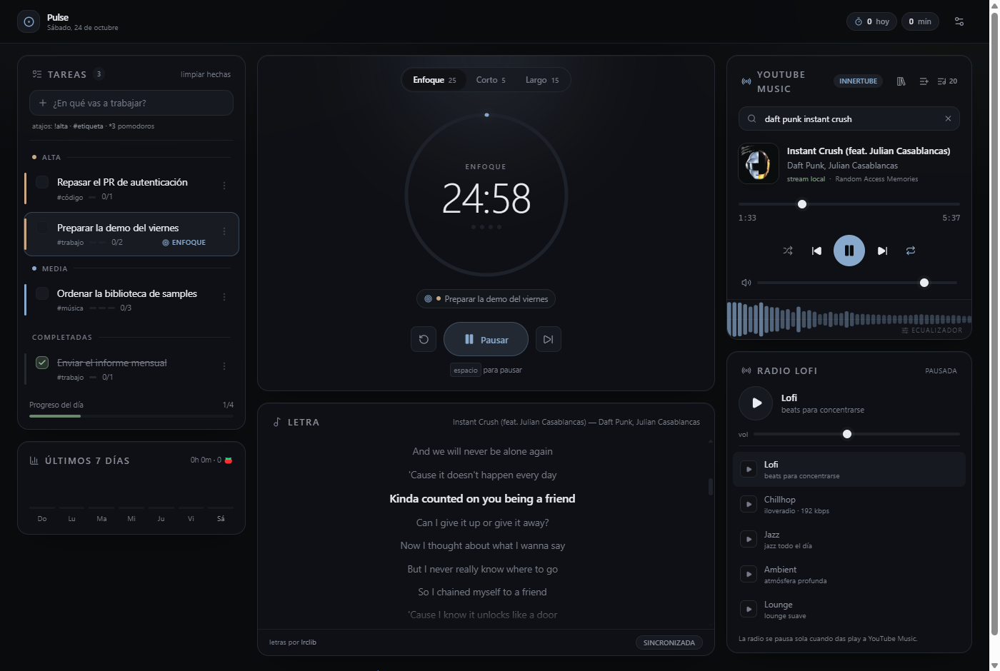

Catálogo Universal con YouTube Music
Busca cualquier canción, artista o álbum. El audio se extrae como stream puro de alta calidad (Opus a 160 kbps / AAC) mediante yt-dlp como sidecar local en Rust, sin anuncios de video ni scripts de rastreo.
Pulse une tus tareas por prioridad, temporizador Pomodoro, radio lofi y YouTube Music con letras sincronizadas. Cero anuncios, sin suscripciones de pago y con descargas offline.

DISEÑADO PARA TRABAJAR DE VERDAD
Todo lo necesario para sesiones productivas de 4 a 8 horas sin abrir pestañas innecesarias.
Busca cualquier canción, artista o álbum. El audio se extrae como stream puro de alta calidad (Opus a 160 kbps / AAC) mediante yt-dlp como sidecar local en Rust, sin anuncios de video ni scripts de rastreo.
Línea a línea en tiempo real con LRCLIB. Haz clic en cualquier estrofa para saltar el audio al instante.
Espectro en canvas en tiempo real y ecualizador de 5 bandas con presets: Flat, Bass, Vocal, Rock y Night.
Pega cualquier enlace público de playlist de Spotify o sube un archivo CSV de Exportify. Pulse busca cada tema en YouTube Music, calcula la coincidencia exacta por título, artista y duración, y guarda la lista en tu equipo.
Ciclos de trabajo y descanso con reloj basado en timestamp para evitar desfases. Cada sesión completada suma puntos a tu tarea activa.
Lofi, Chillhop, Jazz, Ambient y Lounge. Se pausa sola si pones una canción y se reanuda cuando tú lo decidas.
DIFERENCIAS CLARAS
Compara el rendimiento y la privacidad frente a las alternativas tradicionales.
| Característica | Pulse (Tauri v2) | Spotify Free | YouTube en Chrome |
|---|---|---|---|
| Consumo de Memoria RAM | ~50 MB - 80 MB | 350 MB - 600 MB | 600 MB - 1.2 GB |
| Anuncios o Interrupciones | ✓ Ninguno (Cero anuncios) | ✕ Cada 3 o 4 canciones | ✕ Video ads y banners |
| Letras Sincronizadas (Karaoke) | ✓ Gratuitas (LRCLIB) | Limitadas / Requiere Premium | ✕ No disponibles |
| Descargas Offline en Disco | ✓ Archivos reales en audio puro | ✕ Solo en Premium | ✕ Solo con YouTube Premium |
| Modo Mini Player flotante | ✓ Sí (Always-on-Top) | ✕ No nativo | Picture-in-picture (solo video) |
| Gestor de Tareas y Pomodoro | ✓ Integrado en la misma ventana | ✕ No | ✕ No |
DISEÑADO PARA CUALQUIER SITUACIÓN
Las descargas son archivos reales en tu disco, servidos localmente con el mismo ecualizador y visualizador.
Elige el preset de calidad (Mejor disponible, 160, 128 o 96 kbps). Si una canción está en tu almacenamiento local, Pulse jamás la solicita por internet.
Consulta exactamente cuántos megabytes ocupa cada canción, espacio libre en disco y borra canciones con un solo clic desde Ajustes.
Reduce Pulse a una barra compacta siempre visible sobre tu editor de código o navegador con el reloj pomodoro, tarea activa y controles de música.
INGENIERÍA ROBUSTA
Pulse no utiliza APIs frágiles ni servidores intermedios de terceros. Todo corre localmente en tu propio equipo.